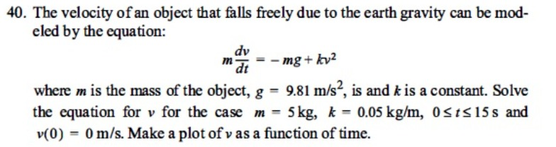

Problema:

La velocidad de un objeto que cae libremente debido a la gravedad terrestre puede modelarse con la ecuación:
$$ m \frac{dv}{dt} = -mg + kv^2 $$
donde $m$ es la masa del objeto, $g = 9.81 \text{ m/s}^2$, y $k$ es una constante. Resuelva la ecuación para $v$ para el caso $m = 5 \text{ kg}$, $k = 0.05 \text{ kg/m}$, $0 \le t \le 15 \text{ s}$ y $v(0) = 0 \text{ m/s}$. Haga una gráfica de $v$ en función de $t$.